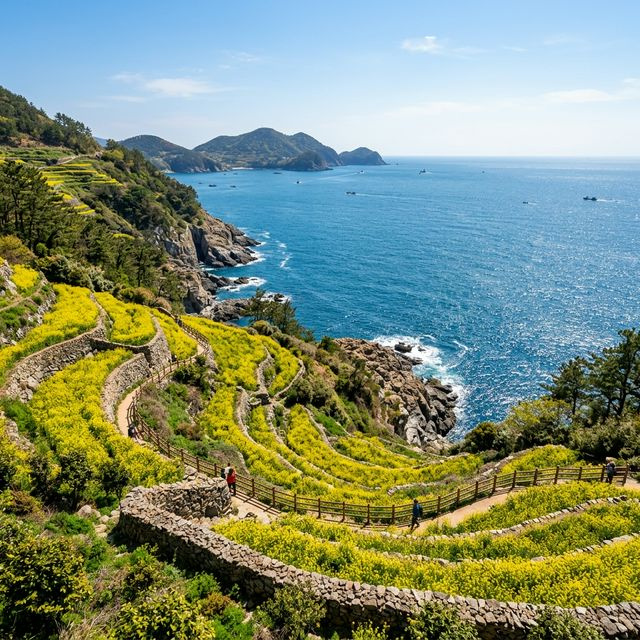
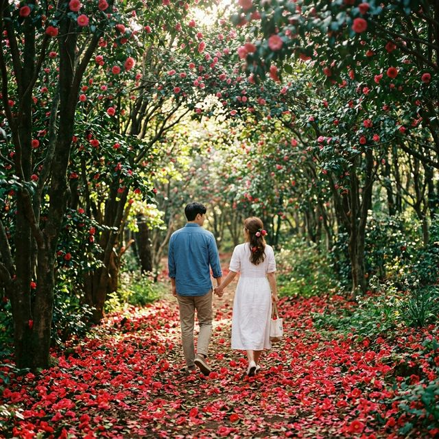
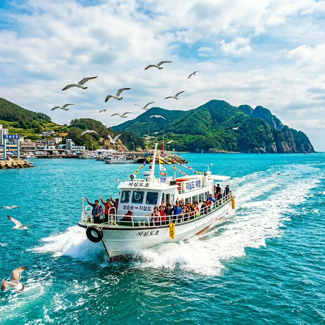

거제시 일운면의 끝자락인 예구마을에서 출발하여 숲길을 헤치고 내려가면 만날 수 있는 공곶이는 한 평생을 이 땅에 바친 강명식 할아버지 부부가 손수 일궈낸 자연 정원입니다.
3월 하순 노란 수선화 물결이 지나간 4월 하순의 공곶이는, 역설적으로 가장 평화로운 빛깔을 자랑합니다. 수선화의 흔적이 남아있는 초록 줄기들과 그 뒤로 끝없이 펼쳐진 에메랄드빛 남해 바다가 주는
시각적 해방감은 형언할 수 없는 감동을 줍니다.
공곶이로 내려가는 길은 가파른 경사가 포함된 '동백나무 터널'로 이루어져 있습니다. 햇볕이 채 들지 않을 만큼 빽빽한 동백나무 사이를 걷다 보면 어느덧 몽돌해변이
나타나는데, 파도가 들락거릴 때마다 들려오는 자갈 굴러가는 소리가 이곳의 시그니처 사운드입니다. 팁을 드리자면, 공곶이는 관람료가 없는 사유지인 만큼 무인 판매대에서 파는 간단한 농산물이나 기념품을
구매하여 부부의 정성에 마음을 표시해 보세요. 또한 돌아오는 길은 해안 탐방로를 이용하시면 훨씬 수월한 경사로로 예구마을 주차장까지 복귀할 수 있습니다.

해안 절벽을 따라 조성된 개척자의 정원, 공곶이의 평화로운 풍경 — AI 제작 이미지
하늘에서 내려다보면 '마음 심(心)'자를 닮았다고 하여 이름 지어진 지심도는 대한민국에서 손꼽히는 동백 명소입니다. 보통 12월부터 꽃망울을 터뜨리는 동백은 4월 하순,
나무 위에서가 아닌 '바닥 위'에서 마지막 화려함을 뽐내며 사라집니다. 지심도의 동백은 송이째 툭툭 떨어지는 특성이 있어, 4월 말의 산책로는 마치 붉은색 융단을 깔아놓은 듯한 '동백
엔딩'의 장관을 연출합니다.
울창한 원시림 상태를 그대로 간직한 지심도의 둘레길은 약 2시간이면 넉넉히 돌아볼 수 있는 편안한 코스입니다. 팁을 드리자면, 선착장에서 출발해 '마끝(해안 절벽)' 방면으로 먼저 걸어보세요. 탁 트인
바다 전망과 함께 시원한 바람을 맞으며 걷다 보면, 섬 뒤편의 조용한 동백 숲길로 진입하게 됩니다. 이곳은 인적이 드물어 떨어지는 동백꽃 소리를 귀담아듣기에 최적의 장소입니다. 또한 지심도 곳곳에는
일제강점기의 아픈 역사가 담긴 포진지와 탄약고 흔적이 남아있어, 아름다운 풍경 속에 숨겨진 역사의 단면을 되새겨보는 교육적인 시간도 가질 수 있습니다.
지심도로 들어가는 길은 오직 배편뿐입니다. 주로 장승포항이나 지세포항에 위치한 유람선 터미널을 이용하게 되는데요. 4월 황금연휴 기간에는 관광객이 몰려 현장 발권이
매진되는 경우가 다반사입니다. 따라서 방문 최소 3일 전에는 온라인 사전 예약 사이트를 통해 표를 확보하시길 권장합니다. 인터넷 예약 시 장승포 유랑선 터미널 기준으로
성인 왕복 약 14,000~15,000원 선이며, 도서 전용 보험료가 포함되어 있습니다.
승선 시 가장 중요한 준비물은 바로 '신분증'입니다. 2016년부터 시행된 법령에 따라 신분증이 없으면 예약 여부와 상관없이 아예 배에 탈 수 없습니다. 만약 신분증을
잊으셨다면 터미널 내부에 비치된 무인 민원 발급기에서 등본을 발급받아야 하므로 시간이 지체될 수 있습니다. 팁을 하나 더 드리자면, 지심도는 기상 상황에 따라 운항 여부가 결정되니 출발 전 반드시
선사에 확인 전화를 하세요. 또한 선착장에 주자된 차가 많아 주차 자리를 찾는 데 시간이 걸릴 수 있으니, 최소 승선 30분 전 도착을 규칙으로 잡으시는 것이 성공적인
여행의 첫걸음입니다.

붉은 동백꽃이 떨어진 지심도 숲길의 신비로운 정취 — AI 제작 이미지
당일치기 여행은 시간 싸움입니다. 먼저 오전 10시 지심도행 첫 배를 타는 스케줄을 잡으세요. 섬 전체를 여유 있게 둘러보고 다시 뭍으로 나오는 배는 오후 1시경이
적당합니다. 섬 안에는 세련된 카페는 없지만, 오히려 토속적인 평상에서 파는 해물 파전이나 커피가 주는 섬 특유의 여유로움이 있습니다. 배를 타고 나오는 길에는 갈매기들에게 새우깡을 던져주는 소소한
재미도 놓치지 마세요.
육지로 돌아온 뒤에는 오후 2시경 점심 식사를 합니다. 장승포항 근처는 게장 골목으로 유명한데, 이곳에서 밥도둑 게장을 맛본 뒤 차로 약 15분 거리인 예구마을로
이동합니다. 오후 4시부터 5시 30분까지는 공곶이 탐방의 시간입니다. 이 시간에는 해가 살짝 기울면서 공곶이의 풍경이 더욱 황금빛으로 변하는 마법 같은 순간을 만날 수
있습니다. 탐방 후에는 예구마을 방파제 근처에서 거제 여행의 마지막 노을을 감상하며 하루를 정리하는 코스가 동선 낭비 없는 가장 완벽한 시나리오입니다.
거제의 봄 식탁을 책임지는 주인공은 단연 멍게입니다. 4월의 멍게는 향이 가장 짙고 살이 통통하게 올라 비빔밥으로 먹기에 최고의 산도와 당도를 자랑합니다. 흰 쌀밥 위에
바다 내음 가득한 신선한 멍게와 고소한 김가루, 그리고 참기름 한 방울이 어우러진 맛은 거제 여행을 통틀어 가장 강렬한 기억으로 남을 것입니다. 장승포항 인근에는 3대째 내려오는 멍게비빔밥 노포들이
많으니 리뷰를 꼼꼼히 체크해 보세요.
또한 거제 하면 빼놓을 수 없는 것이 바로 무한 리필 간장게장입니다. 서울의 비싼 전문점과는 달리, 가성비 넘치는 가격에 양념게장과 간장게장을 마음껏 즐길 수 있는
식당들이 즐비합니다. 여기에 속풀이용 해물 뚝배기나 시원한 성게알 미역국을 곁들인다면 전날의 피로까지 싹 가시는 기분을 느끼실 겁니다. 팁을 드리자면, 유명 식당은 오후 3~5시 사이에 브레이크 타임을
갖는 경우가 많으니 당일치기 여행자들은 이 시간을 교묘히 피해 점심을 조금 일찍 혹은 조금 늦게 드시는 전략이 필요합니다.

푸른 바다를 가르며 지심도로 향하는 낭만 가득한 유람선 — AI 제작 이미지
지심도와 공곶이는 모두 상당량의 보행을 요구하는 코스입니다. 특히 공곶이의 돌계단 경사는 무릎이 약하신 분들에게는 꽤나 도전적인 구간입니다. 따라서 바닥이 얇은 플랫
슈즈나 굽이 높은 구두는 절대 추천하지 않습니다. 접지력이 좋은 운동화나 가벼운 트레킹화를 착용하셔야 발의 피로를 최소화할 수 있습니다. 팁으로, 일정이 빡빡하다면 갈아
신을 여벌의 편안한 슬리퍼를 차에 비치해 두는 것도 이동 시 큰 도움이 됩니다.
복장은 겹쳐 입기 좋은 '레이어드 룩'을 권장합니다. 도보로 이동할 때는 체온이 급격히 오르지만, 배 위나 해안 절벽에서는 매서운 바닷바람이 불어올 수 있습니다. 반팔
위에 얇은 바람막이나 가디건을 입고, 상황에 따라 입고 벗으며 체온 조절을 하세요. 4월의 햇살은 자외선 지수가 상당히 높으므로, 선글라스와 캡 모자를 지참해 눈과 피부를 보호하는 센스도 잊지 마시기
바랍니다. 가방은 양손이 자유로운 백팩을 권장하며, 개인용 물과 간단한 초콜릿 같은 간식을 챙겨주는 것은 트레킹의 기본 소양이라 할 수 있습니다.
| 명당 이름 | 특징 및 베스트 설정 | 촬영 추천 시간 |
|---|---|---|
| 지심도 마끝 | 탁 트인 해안 절벽 파노라마 | 오전 11시 (순광일 때) |
| 공곶이 돌계단 | 동백나무 터널 속 감성 샷 | 오후 4시 (빛이 은은할 때) |
| 예구마을 방파제 | 내도를 배경으로 한 정적인 샷 | 오후 5시 30분 (노을 직전) |
| 지심도 운동장 | 하늘과 동백이 맞닿은 광각 샷 | 점심 전후 (푸른 하늘 강조) |
거제도는 화려함보다는 **'우직함'이 어울리는 섬**입니다. 벼랑 끝을 일궈낸 노부부의 정성이 담긴 공곶이가 그러하고, 묵묵히 제 몸을 던져 길을 붉게 물들이는 지심도의 동백이 그러합니다. 2026년
4월의 끝자락에서 진행되는 이 여행은 단순한 관광을 넘어, 우리 삶의 한 페이지를 정리하고 새롭게 채울 에너지를 얻는 소중한 시간이 될 것입니다.
파도를 가르는 도선의 물결과 발길 닿는 곳마다 들려오는 새소리가 벌써 귓가에 들리는 듯합니다. 이번 포스팅에서 안내해 드린 거제의 당일치기 코스를 따라 떠나보세요. 꼼꼼한
예약과 준비가 뒷받침된다면, 여러분의 거제 여행은 그 어떤 해외 여행지보다 깊고 진한 향기로 대답해 줄 것입니다. 사랑하는 사람의 손을 꼭 잡고 떠나는 거제도 힐링 여행, 지금 바로 실천에 옮겨보시는
건 어떨까요?